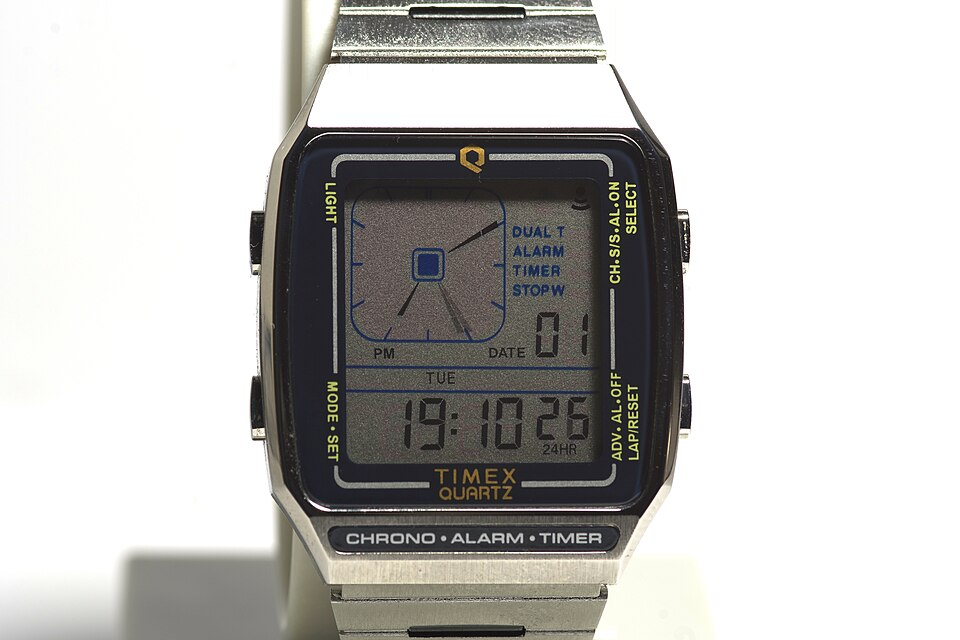

<template id="s4-polaroids-template">
  <div data-composition-id="s4-polaroids" data-width="1080" data-height="1920">
    <div class="sc">
      <div class="paper"></div>
      <div class="world">
        <div class="l1 sat"><span data-t="10.64">that</span> <span data-t="10.92">I</span> <span data-t="11.02">bought</span> <span data-t="11.41">my</span> <span data-t="11.55">first</span></div>
        <div class="grpA">
          <div class="pol p1" data-drop="10.85"></div>
          <div class="lbl-timex hero serif blue" data-t="11.90">Timex</div>
          <div class="for sat" ><span data-t="12.40">for</span></div>
          <div class="price hero sans" data-t="12.58">£15</div>
        </div>
        <div class="l2 sat"><span data-t="13.29">I</span> <span data-t="13.35">remember</span> <span data-t="13.68">I</span> <span data-t="13.76">got</span> <span data-t="13.93">it</span> <span data-t="14.19">from</span></div>
        <div class="pol p2" data-drop="14.12"></div>
        <div class="l3"><span class="sat" data-t="14.51">here in</span><span class="hero serif blue lon" data-t="14.85">London.</span></div>
      </div>
    </div>
    <style>
      [data-composition-id="s4-polaroids"] { position: absolute; inset: 0; overflow: hidden; background: #f2f2f4; font-family: var(--sans); color: var(--ink); }
      [data-composition-id="s4-polaroids"] .sc, [data-composition-id="s4-polaroids"] .world { position: absolute; inset: 0; }
      [data-composition-id="s4-polaroids"] .paper { position: absolute; inset: 0; opacity: 0.5; mix-blend-mode: multiply;
        background-image: url("data:image/svg+xml;utf8,<svg xmlns='http://www.w3.org/2000/svg' width='400' height='400'><filter id='p'><feTurbulence type='fractalNoise' baseFrequency='0.75' numOctaves='3' seed='3'/><feColorMatrix type='matrix' values='0 0 0 0 0.55  0 0 0 0 0.55  0 0 0 0 0.6  0 0 0 0.35 0'/></filter><rect width='100%' height='100%' filter='url(%23p)'/></svg>"); }
      [data-composition-id="s4-polaroids"] .sat { font-weight: 500; font-size: 42px; letter-spacing: -0.01em; color: #2a2a30; }
      [data-composition-id="s4-polaroids"] .sat span { display: inline-block; }
      [data-composition-id="s4-polaroids"] .hero.serif { font-family: var(--serif); font-style: italic; font-weight: 700; letter-spacing: -0.01em; }
      [data-composition-id="s4-polaroids"] .hero.sans { font-weight: 800; letter-spacing: -0.04em; }
      [data-composition-id="s4-polaroids"] .blue { color: var(--blue); }
      [data-composition-id="s4-polaroids"] .l1 { position: absolute; left: 96px; top: 300px; }
      [data-composition-id="s4-polaroids"] .pol { position: absolute; background: #fff; padding: 18px 18px 64px; box-shadow: 0 18px 40px rgba(0,0,0,0.18), 0 2px 6px rgba(0,0,0,0.12); }
      [data-composition-id="s4-polaroids"] .pol img { display: block; width: 100%; height: 100%; object-fit: cover; }
      [data-composition-id="s4-polaroids"] .p1 { left: 80px; top: 390px; width: 560px; height: 470px; transform: rotate(-4deg); }
      [data-composition-id="s4-polaroids"] .p1 img { object-position: 50% 45%; }
      [data-composition-id="s4-polaroids"] .lbl-timex { position: absolute; left: 110px; top: 850px; font-size: 150px; line-height: 1; }
      [data-composition-id="s4-polaroids"] .for { position: absolute; left: 700px; top: 560px; }
      [data-composition-id="s4-polaroids"] .price { position: absolute; left: 660px; top: 600px; font-size: 230px; line-height: 1; }
      [data-composition-id="s4-polaroids"] .l2 { position: absolute; left: 96px; top: 1090px; }
      [data-composition-id="s4-polaroids"] .p2 { left: 470px; top: 1150px; width: 520px; height: 360px; transform: rotate(5deg); }
      [data-composition-id="s4-polaroids"] .p2 img { object-position: 50% 22%; }
      [data-composition-id="s4-polaroids"] .l3 { position: absolute; left: 96px; top: 1330px; display: flex; flex-direction: column; align-items: flex-start; }
      [data-composition-id="s4-polaroids"] .lon { font-size: 120px; line-height: 1; margin-top: 4px; }
    </style>
    <script src="https://cdn.jsdelivr.net/npm/gsap@3.15.0/dist/gsap.min.js"></script>
    <script>
      window.__timelines = window.__timelines || {};
      (function () {
        const T0 = 10.60, r = '[data-composition-id="s4-polaroids"] ';
        const root = document.querySelector('[data-composition-id="s4-polaroids"]');
        const tl = gsap.timeline({ paused: true });
        tl.from(r + ".sc", { scale: 1.06, filter: "blur(8px)", duration: 0.35, ease: "expo.out" }, 0);
        tl.fromTo(r + ".world", { y: 0 }, { y: -36, duration: 4.7, ease: "none" }, 0);
        root.querySelectorAll("[data-t]").forEach((el) => {
          const t = Math.max(0.05, +el.dataset.t - T0 - 0.04);
          if (el.classList.contains("hero")) tl.from(el, { opacity: 0, scale: 0.94, filter: "blur(6px)", duration: 0.4, ease: "expo.out" }, t);
          else tl.from(el, { opacity: 0, y: 14, duration: 0.25, ease: "power2.out" }, t);
        });
        root.querySelectorAll("[data-drop]").forEach((el, i) => {
          const t = +el.dataset.drop - T0;
          tl.from(el, { y: -90, rotation: i ? 14 : -14, opacity: 0, duration: 0.55, ease: "back.out(1.4)" }, t);
        });
        tl.to(r + ".grpA", { opacity: 0.38, duration: 0.4, ease: "power2.out" }, 14.10 - T0);
        tl.to(r + ".l1", { opacity: 0.38, duration: 0.4, ease: "power2.out" }, 14.10 - T0);
        tl.set({}, {}, 4.7);
        window.__timelines["s4-polaroids"] = tl;
      })();
    </script>
  </div>
</template>
